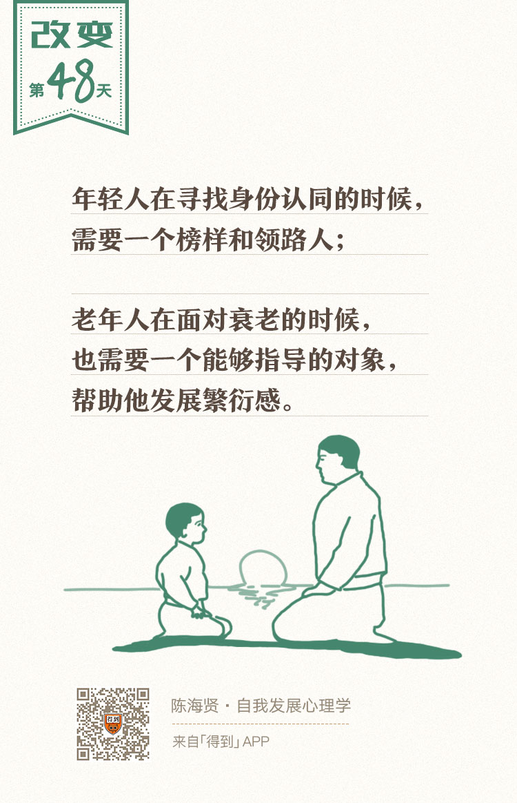

48丨中年期使命（二）：如何传承人生经验？

欢迎来到《自我发展心理学》。
你好，我是陈海贤。
上节课我们讲到了家庭里的繁衍。其实，繁衍不仅在家庭里，还发生在更广阔的工作和社会领域。这一讲，我们就来聊聊家庭以外的繁衍。
在心理学家埃里克森的理论中，繁衍的含义是非常广的。
比如，在工作和休闲活动中保持活力、对生活怀有热情和好奇心、积极教导和关爱他人、为社会和他人谋福利、维护公平和正义……这些都具有繁衍的性质。
繁衍的核心含义，就是我们能够借助这些活动，突破自我的限制。否则，你就会在衰老的恐惧中陷入停滞。
繁衍的三种形式
那么，到底有哪些繁衍的形式呢？
我归纳了一下，主要有三种：
第一种繁衍的形式，是创造性的工作。
在埃里克森看来，创造就是一种特殊的繁衍形式。人家经常说，创造一个作品就跟生一个孩子一样。
原因就在于，创造就是通过你的劳动，把某些你之外的东西带到这个世界上来，而一旦它诞生了，它就会独立于你存在。也因为不断把独立于你的新东西带到这个世界上，创造就变成了一种突破自我限制的形式。
所以很多从事创造工作的人，不容易有停滞感。这也是为什么很多做事务工作的人，会在中年时陷入焦虑，并希望转向创造性的工作。
第二种繁衍的形式，是传承。
前段时间在校友会上听阿里云的总裁王坚老师分享他的成长经历。他说：
“我原来在学校，很年轻就被评为教授了。那时候跟我工作的老师，很多年纪都比我大二三十岁，他们给了我很多帮助。
后来离开学校，一路辗转，加入阿里，忽然发现周围跟我一起工作的人，都比我要年轻20岁了。这让我很感慨。从跟比我大20岁的人工作，到忽然跟比我小20岁的人工作，我就会想，除了我自己的工作以外，我还可以做些什么？
当时别人替我做了这么多，那现在反过来，我能为他们做些什么？这深刻地影响了我对工作价值的判断。”
年轻的时候获得年长者的帮助，人到中年时开始帮助更年轻的人，这种传承，广泛地发生在工作领域。这种传承，也意味着从年轻时的新手，向中年时的专家的转变。
传承这种繁衍形式，在一些传统的“手艺人”或者“匠人”的工作中，尤为明显。
在工业化以前，你要学一门手艺，你要先拜一个师傅。这是一个很郑重的仪式，师傅都知道收一个徒弟的分量，不仅是要负责他们的职业生涯，也要成为他们的人生导师。
师徒既是一种工作关系，也是一种包含情感的家人关系。
他们繁衍的形式也很像，只不过联结师徒关系的，从血缘变成了手艺的传承。不像现在，工作中的关系变成了纯粹的利益关系，连研究生都把自己的导师叫老板了。
工作中的繁衍，就被这种生硬的社会分工给切断了。
传承这种繁衍形式，包括两个方面的含义：一种是技术上的，一种是关系上的。这两种传承都包含了某种形式的自我超越，因此都有繁衍的含义。
为什么这么说呢？我们先来说技术上的传承。
我们都读过很多武侠小说，在武侠小说里，师父如果悟到了什么武功绝学，是一定要想办法传给弟子的。如果这种武功失传了，师父就会留下遗憾，观众也会跟着电影的主角一声叹息。
他们在叹息什么呢？
他们叹息的是，无论是何种形式的技术、武功、管理经验，都有超越个人的存在价值。它不该随着你的老去而消失。
即使这些经验是你总结的，或者是你在工作中摸索出来的，它们在本质上还是不属于你一个人的，而是属于全人类的。你只是它们的保管人。
越是重要的技术或者经验，你越有传承的责任。如果你接受了这样的责任，那你就通过传承超越了自我。
家庭治疗大师Haley去世的时候，米纽庆曾经给为他写过讣文，里面有一句话：
这句话是这种传承最好的说明。
那如果我拒绝传承会怎么样呢？毕竟，这是我好不容易学到或者发明的东西，凭什么要教给这些年轻人，让他们占便宜呢？不是说教会徒弟，饿死师父吗？
如果这样，那他就不会有繁衍的感觉，就很可能陷入停滞的恐慌。
当然传承不仅是技术上的，还有关系上的，就是那些有经验的老人，愿意辅佐年轻人，帮助他们成长，成为他们的榜样和领路人。
这是一种带着敬意的担子，它需要你的付出，而你也是在这种付出中，超越了自我。
米纽庆去世的时候，我的老师曾经写过一篇纪念文章，叫《最后的吉他》。
里面讲到，米纽庆八十多岁那年，老师请他去北京讲学，那时候米纽庆就跟她说：
“你知道著名的吉他手Segovia吗？我和他一样，给我一把吉他，我就会在台上奏出音乐，但是走下台来，我只是一个老头儿。你现在要靠你自己了，你不想为自己的民族做些事吗？你不愿意在自己的地方发展吗？”
老师当时热泪盈眶，不停地说：“不要不要，我不要你的吉他。”
我理解她当时说不要，一是因为她不愿意承认米纽庆的老去。二是因为她知道这个吉他背后的责任。
我老师年轻的时候是一个特别洒脱、不愿意受拘束的人，根本不想承担这样的责任。可是，她说：“我也不知不觉就接过了他的吉他。”
这几年她一直在香港和内地两地飞，教导一些年轻的咨询师。每次在她的课堂里，我都会感觉到，她是那么真诚地想把她会的东西交给我们。
她自己是个老太太了，可是她的工作量都很惊人，上课、督导、见个案，几乎每次都是从早到晚，马不停蹄。这让我们既佩服又担心。
有一次，说起某个著名咨询师在授课的途中去世，她还跟我们开玩笑说：“我也在想啊，我都这么老了，万一哪天我也在这里出事了，你们知道怎么把我弄回去吗？”
从她身上，我看到一种传承的责任。
一方面，传承其实是很辛苦的，另一方面，她能这么豁达地面对衰老这件事，跟她承担起了这种传承的责任是有关的。这种突破自我中心以后带来的豁达的人生境界，就是繁衍带来的回报。
第三种繁衍的形式，是回报社会的使命感。
无论是家庭的繁衍，还是工作中的传承，一般都会限定在和我们自己亲近的人中间。比如孩子、学生、下属。但是使命感是传承的深化和扩展，它会把这种繁衍，扩展到我们不认识的人身上。
因为我的老师经常讲米纽庆的故事，我还是以他为例来说明这种使命感是怎么样的。
你知道，心理咨询总体来说是一个为中产阶级服务的行业，毕竟咨询费也不便宜。但是米纽庆很不同。他是心理学家里少数为穷人工作的人。
当年他带着老师去纽约的穷人区做咨询，我老师经常迟到。她一迟到，米纽庆就不让她过来了。因为这些穷人区经常有抢劫案发生，米纽庆担心她一个人会有危险。
米纽庆就是在这么危险的城市贫民窟工作。
他为当地的社区培养了很多为穷人工作的咨询师，有时候还会自己出钱帮穷人打官司。晚年的时候，他还以1美元的年薪为纽约的医疗系统改革奔走。
每次听到这种故事，我都会很感慨，很希望自己能够成为像他这样的人。相信你也有类似的想法。
人是有很多限制的，会老去，会死亡，可是，当我们突破了这种自我中心，发展出广泛的繁衍感以后，当我们真正学着关心他人的时候，我们就突破了这种与生俱来的限制，拥有了一种超越衰老和死亡的豁达。
繁衍是一种互惠
听起来繁衍好像是单向的给予，其实不对，繁衍也是一种互惠。
年轻人在寻找身份认同的阶段，需要一个榜样和领路人，而老年人在面对衰老的时候，也需要一个指导对象帮助他发展繁衍感。
年轻人和老年人相互需要，这是人类发展出来的，突破自我限制，传承文明的特殊形式。
黑塞的小说《卢迪老师》里讲了一个故事，两个生活在圣经时代的著名的医疗者——年轻的约瑟夫和年长的戴恩，他们以不同的方式帮助人们重获心灵的平静。
两位治疗者从来没有见过面，但是他们作为竞争者工作了很多年。直到年轻的约瑟夫心灵开始烦恼，坠入了黑暗的绝望，他发现，用自己的方式没办法治愈自己，于是去南方寻找戴恩的帮助。
在朝圣的路上，他遇到了一个年老的旅者，就是戴恩。他毫不犹豫地邀请年轻的、陷入绝望的竞争者到自己家里，在那里一起工作了很多年。约瑟夫从戴恩的仆人，变成了学生，最后又变成了同事。
多年以后，戴恩病重，就要死了。他把约瑟夫叫到床前，告诉他，其实，跟约瑟夫的相遇对他自己也是一个奇迹，因为他当时也陷入了绝望之中，感到空虚和心灵的死亡，他同样也无法帮助自己。
在绿洲相遇的那一晚，他正去北方寻找一个叫作约瑟夫的伟大医者，也就是他。
所以你看，年长者关心年轻人，也不仅仅是在付出。
年轻人通过被培养、照顾、教导获得了帮助。而年长的医治者，则通过从追随者那里获得子女般的爱、尊重和安慰，而获得帮助。
年轻人和年长者，在相互医治中，帮助彼此完成了人生发展的课题。这真是一种巧妙的安排。
今天的课，我们讲到了家庭以外的繁衍，重点讲了繁衍的三种形式：
- 创造；
- 传承和使命感；
- 繁衍的互惠。
下一讲，我们来讲人生的最后一个阶段——老年期，它的课题和障碍。
我们下一讲见。
